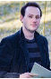

| Name | Bio |
|---|---|
 Garth Nichols |
Garth Nichols is the Director of Teaching and Learning at Bayview Glen, located in Toronto, Ontario,
and is the Co-Founder and Lead Facilitator of Cohort 21. Garth has made the transition from teaching in
the high school classroom to focus on the training and development of teachers because of his passion for
the art and science of teaching. Graduating from his Masters in Curriculum, Teaching and Learning from
OISE/UT he has continued to deepen his exploration and impact on how teachers teach and how students
learn in the 21st Century.
At Bayview Glen, Garth oversees teacher development, integration of technology and curriculum design. He brings a passion for exploring innovation, student engagement and the positioning of teachers in the educational landscape to understand how these can work together to improve student learning. As a Google Certified Educator, Garth also has a keen interest for integrating different technologies into everyday teacher practice to improve the learning environment at Bayview Glen. In 2012, Garth co-founded Cohort 21, a year-long, job embedded PD experience for teachers in the CIS Ontario community. It combines the best of face-to-face learning with digital technology tools to foster community and sharing among teachers to challenge and support them as they shift towards, what is referred to generally as, 21st Century teaching and learning. In its third year, Cohort 21 continues to be a hub of cutting edge pedagogical thinking, discussions and action. Garth welcomes questions, ideas and comments on his blog (cohort21.com/gnichols), and via Twitter (@think_teach). |
|  Michael Berkovsky |
Michael Berkovsky has studied in some of today's leading institutions and was coached by internationally
acclaimed teachers from Russia, Korea and the US. His deep interest in connections between technique
and music, based on the Taubman approach, underscores every aspect of his teaching.
Michael has coached students from the Juilliard evening division as well as college students from
Peabody conservatory.
He enjoys sharing his passion of piano playing with young and adult students of all levels. He's currently an assistant to Prof. Yong Hi Moon at the Peabody Conservatory and maintains a private studio in Toronto. He also serves on the artistic board of CCC piano competition and festival. Michael's students have successfully participated in ON region Kiwanis and CCC competitions as well as RCM examinations. Michael helped prepare students for university admissions in Pennsylvania and Ontario. He frequently judges MTNA competitions in the MD, VA, ON regions. |
 Stavros Vassos |
Professor Vassos currently works as an Assistant Professor in the Department of Computer,
Control, and Management Engineering at the Sapienza University of Rome. He is passionate about
developing Artificial Intelligence (AI) software modules that can be embedded in real-world physical
products or applications to add flexibility and autonomy. His current work focuses on different
scenarios in cognitive robotics, video games, and interactive smart spaces.
He completed his MSc and PhD at the department of Computer Science in the University of Toronto. He received his Diploma in Electrical and Computer Engineering in the National Technical University of Athens. For his MSc and PhD he was involved with proving theoretical results on reasoning about action and change in the situation calculus, and providing practical solutions for dealing with incomplete information in a way that is tractable. He I has been part of the Cognitive Robotics group and has been an active developer of the high-level agent programming language IndiGolog. |
 Ea-Ling Seun |
Ea-Ling Seun has been teaching music to young children for the past 10 years, and has been part of the Bayview Glen Music Faculty for the past 2 years and a half. Her love of Musical Arts came at a young age and has led her to pursue her craft throughout high school and University. Ea-Ling Seun could not be more excited to lend a helping hand with ‘Ctrl-Z’s’ latest project. |
 Tom Richards |
Tom Richards is a trombonist, pianist, composer and conductor living in Toronto. He leads an electro-chamber-jazz ensemble called Riverrun and is a sideman in more than a dozen other projects. As a trombonist, Tom has recorded and performed with The Wooden Sky, The Hidden Cameras, Spoon, The Human Rights, Shred Kelly, The Thing Is, The Australian Art Orchestra, Theatre Columbus, and many others. Tom's composition Full and Empty Barrel for trumpet and piano was premiered at the Orchestre Symphonique de Montreal Standard Life Competition in November, 2014.As a conductor, Tom performed the debut of Ali Berkok’s original score for Eisenstein’s silent film “Battleship Potemkin”. In 2013, Tom conducted Sarah Jerrom's “Yeats Project” for a TD Jazz Festival Special Projects Initiative concert. |